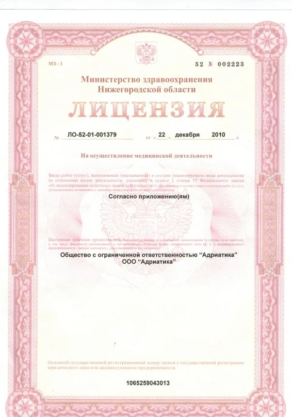
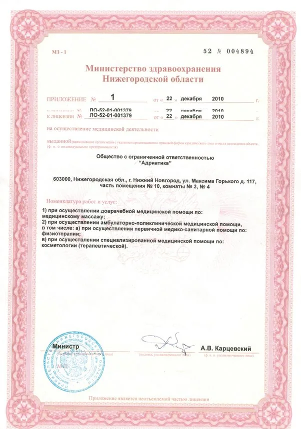
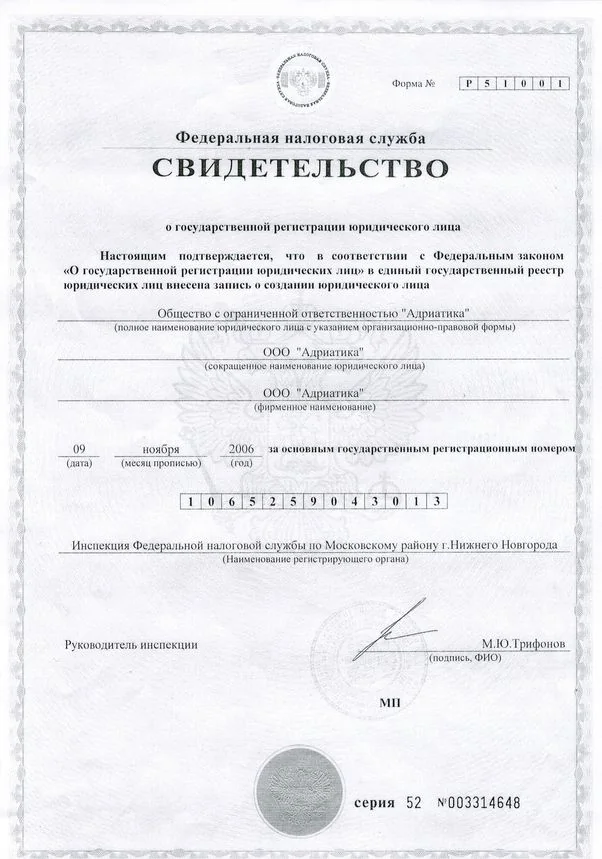

Услуги
Врачебная косметология
Услуги салона для мужчин
Забота о себе стала частью жизни современного мужчины, хотя, казалось, слово «косметика» ассоциируется с прекрасным полом.
Массаж & СПА программы
Доверьтесь рукам наших высококлассных массажистов, и они помогут современному жителю мегаполиса расслабиться и снять стресс, наполняя свой организм новыми силами.
Услуги салона для невест
Главные элементы облика невесты, как утверждают, стилисты салона красоты «Адриатика» – это платье, прическа, макияж и красивые руки.
Маникюр & Педикюр, наращивание ногтей
Залогом качественного сервиса Центра врачебной косметологии & Салона красоты «Адриатика» является индивидуальный подход к каждому человеку, а также безупречное качество профессиональных материалов для ногтевого сервиса именитых брендов ногтевой индустрии.
Эстетическая косметология
Лицо является важной составляющей внешности человека.
Парикмахер. Визажист. Татуаж
Наши парикмахеры – стилисты прошли обучение в лучших школах парикмахерского искусства, у именитых преподавателей и по признанным современным методикам, а также используют в своей работе проверенные временем препараты ведущих брендов парикмахерского искусства.
Коррекция фигуры и Лечение целлюлита
Подробнее об услугах и ценах расскажем по телефону: 291-07-91, 278-57-38.
О салоне
ИСТОРИЯ КОМПАНИИ
История компании началась в 2004 году.
Куличкова Любовь Николаевна – директор Салона красоты «Адриатика». Сегодня «Адриатика» – это не просто первоклассный Салон красоты – это Центр врачебной косметологии с уникальным оборудованием и непревзойденными профессионалами.
«АДРИАТИКА» ЯВЛЯЕТСЯ ОБЛАДАТЕЛЕМ.
Компания обладает Специалистами Международного класса. Это не только высококвалифицированные специалисты и законодатели мод. Это сплоченная команда, которая готова превратить обычное пребывание в праздничный визит!
Благодаря постоянной коммуникации компании «Адриатика» с научно – исследовательскими центрами в ЕС, врачи косметологи имеют возможность постоянно совершенствовать свои знания и использовать в своей работе только передовые технологии.
Парикмахеры – стилисты салона системно проходят обучение в лучших школах парикмахерского искусства: у именитых преподавателей и по признанным современным методикам, используя в своей работе проверенные временем препараты ведущих брендов парикмахерского искусства.
Мастера по маникюру используют в своей работе препараты известных брендов во всем мире, которые отмечены наградами и используются только в лучших клиниках и центрах красоты.
НАШИ НАГРАДЫ
Время доказало верность наших подходов и высокий уровень обслуживания. Свидетельством тому являются постоянные Гости центра, многие из них VIP персоны нашего города, от которых приятно слышать слова благодарности и получать комплименты.
Благодарим всех Гостей Центра врачебной косметологии & Салона красоты «Адриатика» за то, что они с нами и гордимся тем, что нам доверяют свой имидж!
НАШИ ПРЕИМУЩЕСТВА:
- Высочайшее мировое качество
- Использование только той косметики, эффективность которой клинически протестирована и доказана
- Изысканное качество оказываемых услуг, так как не ограничиваемся препаратами одной марки
- Широкий спектр услуг как для мужчин и женщин, так и для детей
- Важное место в работе центра уделяется безопасности здоровья Гостей и конфиденциальности.
НАША ФИЛОСОФИЯ:
- Создание высокоэффективного сервиса
- Ориентация на новейшие научные достижения
- Удобство и безопасность для наших Гостей
Интерьер салона
ЛИЦЕНЗИИ



Что говорят Гости
Хороший салон, уютная отмосфера ☺ Мастер обрабатывала ногти аккуратно, и качественно. Большой выбор цветов лака. Мастер помогла определиться с дизайном. Хожу не первый раз, покрытие держится долго☺
Здравствуйте. Посетила салон "Адриатика" впервые и осталась очень довольна обслуживанием и атмосферой, а также демократичными ценами. Мастер приятный, маникюр и педикюр сделала качественно. Однозначно советую данный салон!
Спасибо за педикюр, аккуратно, быстро, качественно
Контакты и схема проезда
Центр врачебной косметологии & салон красоты "Адриатика"
г. Нижний Новгород, ул. Горького, д.117,
Бизнес-центр «Столица Нижний», 3 этаж
От метро «Горьковская» – 570 м. Вход доступен для гостей на коляске.
| Пн–Сб | 09:00–20:00 |
|---|---|
| Вс | выходной |
Мы рады видеть Вас в нашем салоне с ПН. – СБ. с 9.00 до 20.00 часов ежедневно. Воскресенье – выходной день.
По договоренности салон готов обслужить Вас во внерабочие часы.
Выезд мастеров на дом – бесплатно.